Българските плажове
Забележка: През далечната 2007 година с моя най-добър приятел Петър решихме да обиколим българското Черноморие, да го снимаме и да направим сайт. Всички снимки са архив от тогава. Скъп спомен.
Българското Черноморие е дълго 378 километра и включва хиляди и най-разнообразни плажове. Бреговата ивица варира от висока и камениста до широка такава със ситен, златен пясък. Тук ще намерите всичко - от девствени плажове до развити комерсиални курорти. За съжаление, българските плажове са застрашени и една от целите на този сайт е да запознае хората с проблемите им. Всички знаят или са чували за безумните строежи и нехайно стопанисване на плажовете ни, но малко осъзнават нуждата да направят нещо. Много от снимките остават мемоари за безвъзвратно погубената красота вследствие на безразсъдното българско предприемачество и безхаберие. Туризмът винаги е бил водещ в икономиката на България и ние твърдо подкрепяме неговото развитие. За съжаление обаче дребните търговски интереси през последните години имаха за цел предимно краткосрочни печалби. Това доведе до увреждане и унищожаване на българската черноморска ивица, плажове и природа като цяло. Виновниците са много и започват с безразсъдните предприемачи, които малко се интересуват от цялостното комплексно развитие на курорта или туристическия обект. След това отговорност носят банките, които безотговорно отпускаха кредити за всеки скалъпен проект. На последно място виновен е и безотговорния турист, който има ниски критерии към хотела, хвърля грешно парите си в мръсния нощен бизнес и стимулира развъждането на подземната фауна. Унищожението на българските черноморски курорти и плажове не остана незабелязано от много здравомислещи хора, които все по-често предпочитат почивката в чужбина или алтернативен туризъм. Текущата финансова криза, надвиснала над света през 2009г, е малък лъч надежда за България, че безумните туристически проекти ще бъдат лишени от финансиране и само най-добрите и перспективни инициативи ще се лансират.
- 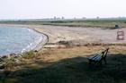
Дуранкулак - 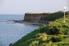
Крапец - 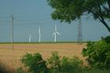
Шабла - 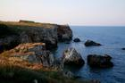
Тюленово - 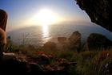
Камен бряг - 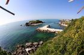
Рускалка - 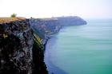
Калиакра - 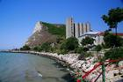
Каварна - 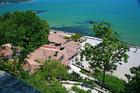
Балчик - 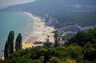
Албена и Кранево - 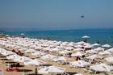
Златни пясъци - 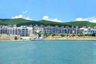
Ривиера - 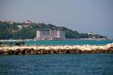
Св.св. Константин и Елена - 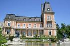
Евксиноград - 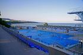
Варна - 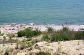
Галата и Прибой - 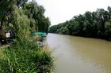
Камчия - 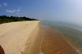
Шкорпиловци - 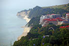
Бяла 
Кара Дере (Карадере)- 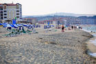
Обзор - 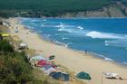
Иракли и Емона - 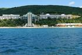
Елените - 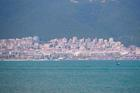
Свети Влас - 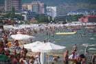
Слънчев бряг - 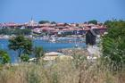
Несебър - 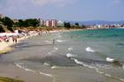
Равда - 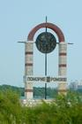
Поморие - 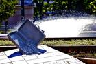
Бургас - 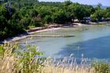
Градина - 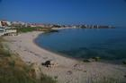
Созопол - 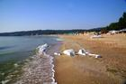
Каваци и Смокиня - 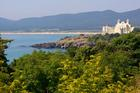
Дюни - 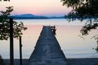
Ропотамо - 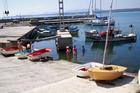
Приморско - 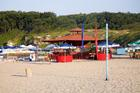
ММЦ - 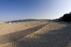
Китен - 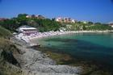
Лозенец - 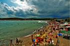
Арапя - 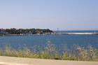
Царево - 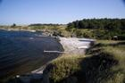
Варвара - 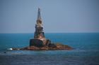
Ахтопол - 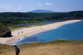
Синеморец - 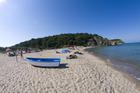
Силистар - 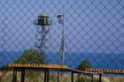
Резово